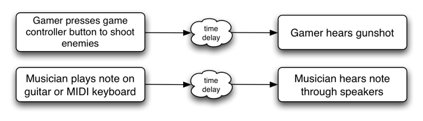

This section is informative.
Here are some interesting examples where direct JavaScript processing can be useful:
Unusual and interesting custom audio processing can be done directly in JS.
It's also a good test-bed for prototyping new algorithms. This is an extremely rich area.
JS processing is ideal for illustrating concepts in computer music synthesis and processing,
such as showing the de-composition of a square wave into its harmonic components, FM synthesis techniques, etc.
15. Performance Considerations
15.1. Latency: What it is and Why it's Important

For web applications, the time delay between mouse and keyboard events (keydown, mousedown, etc.) and a sound being heard is important.
This time delay is called latency and is caused by several factors (input device latency, internal buffering latency, DSP processing latency, output device latency, distance of user's ears from speakers, etc.), and is cummulative. The larger this latency is, the less satisfying the user's experience is going
to be. In the extreme, it can make musical production or game-play impossible. At moderate levels it can affect timing and give the impression of
sounds lagging behind or the game being non-responsive. For musical applications the timing problems affect rhythm. For gaming, the timing problems affect precision of gameplay.
For interactive applications, it generally cheapens the users experience much in the same way that very low animation frame-rates do.
Depending on the application, a reasonable latency can be from as low as 3-6 milliseconds to 25-50 milliseconds.
15.2. Audio Glitching
Audio glitches are caused by an interruption of the normal continuous audio stream, resulting in loud clicks and pops. It is considered to be
a catastrophic failure of a multi-media system and must be avoided. It can be caused by problems with the threads responsible for delivering the audio
stream to the hardware, such as scheduling latencies caused by threads not having the proper priority and time-constraints. It can also be caused by
the audio DSP trying to do more work than is possible in real-time given the CPU's speed.
15.3. Hardware Scalability
The system should gracefully degrade to allow audio processing under resource constrained conditions without dropping audio frames.
First of all, it should be clear that regardless of the platform, the audio processing load should never be enough to completely lock up the
machine. Second, the audio rendering needs to produce a clean, un-interrupted audio stream without audible
glitches.
The system should be able to run on a range of hardware, from mobile phones and tablet devices to laptop and desktop computers.
But the more limited compute resources on a phone device make it necessary to consider techniques to scale back and reduce the complexity
of the audio rendering. For example, voice-dropping algorithms can be implemented to reduce the total number of notes playing at any given time.
Here's a list of some techniques which can be used to limit CPU usage:
15.3.1. CPU monitoring
In order to avoid audio breakup, CPU usage must remain below 100%.
The relative CPU usage can be dynamically measured for each AudioNode (and chains of connected nodes) as a percentage of the rendering time
quantum. In a single-threaded implementation, overall CPU usage must remain below 100%. The measured usage may be used internally in the implementation
for dynamic adjustments to the rendering. It may also be exposed through a cpuUsage attribute of AudioNode
for use by JavaScript.
In cases where the measured CPU usage is near 100% (or whatever threshold is considered too high), then an attempt to add additional
AudioNodes into the rendering graph can trigger voice-dropping.
15.3.2. Voice Dropping
Voice-dropping is a technique which limits the number of voices (notes) playing at the same time to keep CPU usage within a reasonable range.
There can either be an upper threshold on the total number of voices allowed at any given time, or CPU usage can be dynamically monitored
and voices dropped when CPU usage exceeds a threshold. Or a combination of these two techniques can be applied. When CPU usage is monitored
for each voice, it can be measured all the way from the AudioSourceNode through any effect processing nodes which apply uniquely to that voice.
When a voice is "dropped", it
needs to happen in such a way that it doesn't introduce audible clicks or pops into the rendered audio stream. One way to achieve this is to
quickly fade-out the rendered audio for that voice before completely removing it from the rendering graph.
When it is determined that one or more voices must be dropped, there are various strategies for picking which voice(s) to drop out of the
total ensemble of voices currently playing. Here are some of the factors which can be used in combination to help with this decision:
- Older voices, which have been playing the longest can be dropped instead of more recent voices.
- Quieter voices, which are contributing less to the overall mix may be dropped instead of louder ones.
- Voices which are consuming relatively more CPU resources may be dropped instead of less "expensive" voices.
- An AudioNode can have a
priority attribute to help determine the relative importance of the voices.
15.3.3. Simplification of Effects Processing
Most of the effects described in this document are relatively inexpensive and will likely be able to run even on the slower mobile devices.
However, the convolution effect can be configured with a variety of impulse responses, some of which
will likely be too heavy for mobile devices. Generally speaking, CPU usage scales with the length of the impulse response and the number of channels it has. Thus, it is reasonable to consider that impulse responses which exceed a certain length will not be allowed to run.
The exact limit can be determined based on the speed of the device. Instead of outright rejecting convolution with these long responses,
it may be interesting to consider truncating the impulse responses to the maximum allowed length and/or reducing the number of channels
of the impulse response.
In addition to the convolution effect. The AudioPannerNode may also be expensive
if using the HRTF panning model. For slower devices, a cheaper algorithm such as EQUALPOWER can be used to conserve compute resources.
15.3.4. Sample Rate
For very slow devices, it may be worth considering running the rendering at a lower sample-rate than normal. For example, the sample-rate
can be reduced from 44.1KHz to 22.05KHz. This decision must be made when the AudioContext is created, because changing the sample-rate on-the-fly can be difficult
to implement and will result in audible glitching when the transition is made.
15.3.5. Pre-flighting
It should be possible to invoke some kind of "pre-flighting" code (through JavaScript) to roughly determine the power of the machine.
The JavaScript code can then use this information to scale back any more intensive processing it may normally run on a more powerful machine.
Also, the underlying implementation may be able to factor in this information in the voice-dropping algorithm.
TODO: add specification and more detail here
15.3.6. Authoring for different user agents
JavaScript code can use information about user-agent to scale back any more intensive processing it may normally run on a more powerful machine.
15.3.7. Scalability of Direct JavaScript Synthesis / Processing
Any audio DSP / processing code done directly in JavaScript should also be concerned about scalability. To the extent possible, the JavaScript
code itself needs to monitor CPU usage and scale back any more ambitious processing when run on less powerful devices. If it's an "all or nothing" type of processing, then user-agent check or pre-flighting should be done to avoid generating an audio stream with audio breakup.
15.4. JavaScript Issues with real-time Processing and Synthesis:
While processing audio in JavaScript, it is extremely challenging to get reliable, glitch-free audio while achieving a reasonably low-latency,
especially under heavy processor load.
- JavaScript is very much slower than heavily optimized C++ code and is not able to take advantage of SSE optimizations and multi-threading which is
critical for getting good performance on today's processors. Optimized native code can be on the order of twenty times faster for processing FFTs as
compared with JavaScript. It is not efficient enough for heavy-duty processing of audio such as convolution and 3D spatialization of large numbers of audio sources.
- setInterval() and XHR handling will steal time from the audio processing. In a reasonably complex game, some JavaScript resources will be
needed for game physics and graphics. This creates challenges because audio rendering is deadline driven (to avoid glitches and get low enough latency).
- JavaScript does not run in a real-time processing thread and thus can be pre-empted by many other threads running on the system.
- Garbage Collection (and autorelease pools on Mac OS X) can cause unpredictable delay on a JavaScript thread.
- Multiple JavaScript contexts can be running on the main thread, stealing time from the context doing the processing.
- Other code (other than JavaScript) such as page rendering runs on the main thread.
- Locks can be taken and memory is allocated on the JavaScript thread. This can cause additional thread preemption.
The problems are even more difficult with today's generation of mobile devices which have processors with relatively poor performance and power consumption / battery-life issues.
16. Example Applications
This section is informative.
Please see the demo page for working examples.
Here are some of the types of applications a web audio system should be able to support:
Basic Sound Playback
Simple and low-latency playback of sound effects in response to simple user actions such as mouse click, roll-over, key press.
3D Environments and Games


An HTML5 version of Quake has already been created. Audio features such as 3D spatialization and convolution for room simulation could be used to great effect.
3D environments with audio are common in games made for desktop applications and game consoles.
Imagine a 3D island environment with spatialized audio, seagulls flying overhead, the waves crashing against the shore, the
crackling of the fire, the creaking of the bridge, and the rustling of the trees in the wind. The sounds can be positioned
naturally as one moves through the scene. Even going underwater, low-pass filters can be tweaked for just the right underwater sound.


Box2D is an interesting open-source library for 2D game physics. It has various implementations, including one
based on Canvas 2D. A demo has been created with dynamic sound effects for each of the object collisions, taking into account the velocities vectors and
positions to spatialize the sound events, and modulate audio effect parameters such as filter cutoff.
A virtual pool game with multi-sampled sound effects has also been created.
Musical Applications


Many music composition and production applications are possible. Applications requiring tight scheduling of audio events can be implemented and can be both educational and entertaining. Drum machines, digital DJ applications, and even timeline-based digital music production software with some of the features of
GarageBand can be written.
Music Visualizers

When combined with WebGL GLSL shaders, realtime analysis data can be presented in entertaining ways. These can be as advanced as any found in iTunes.
Educational Applications

A variety of educational applications can be written, illustrating concepts in music theory and computer music synthesis and processing.
Artistic Audio Exploration
There are many creative possibilites for artistic sonic environments for installation pieces.
17. Security Considerations
This section is informative.
18. Privacy Considerations
This section is informative.
When giving various information on available AudioNodes, the Web Audio API potentially exposes information on characteristic features of the client
(such as audio hardware sample-rate) to any page that makes use of the AudioNode interface. Additionally, timing information can be collected through the
RealtimeAnalyzerNode or JavaScriptAudioNode interface. The information could subsequently be used to create a fingerprint of the client.
Currently audio input is not specified in this document, but it will involve gaining access to the client machine's audio input or microphone. This
will require asking the user for permission in an appropriate way, perhaps via the
getUserMedia() API.